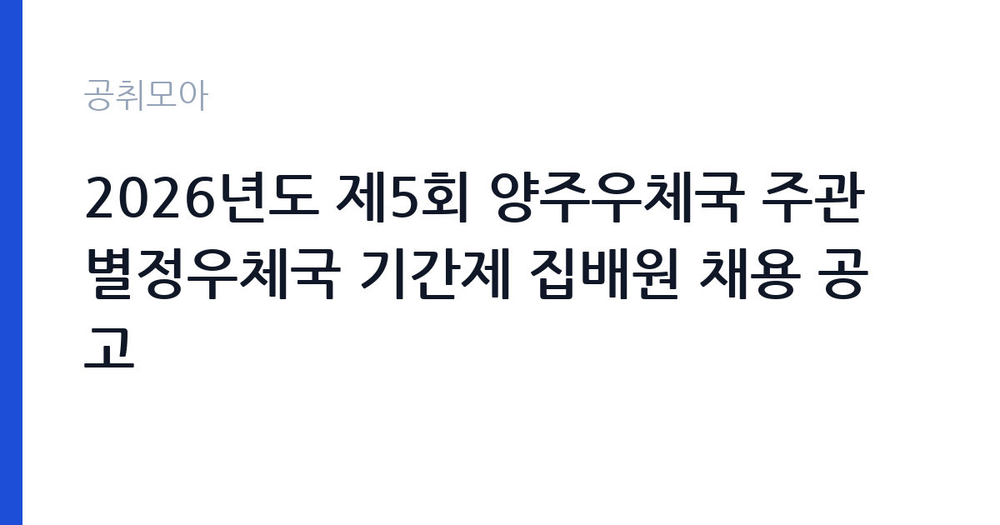

[국가기관] 2026년도 제5회 양주우체국 주관 별정우체국 기간제 집배원 채용 공고
과학기술정보통신부 우정사업본부 경인지방우정청 양주우체국 · 경기 · 마감 2026-11-09 (D-10) · 출처 나라일터

한눈에 보는 모집 조건
| 기관 | 과학기술정보통신부 우정사업본부 경인지방우정청 양주우체국 |
|---|---|
| 공고명 | 2026년도 제5회 양주우체국 주관 별정우체국 기간제 집배원 채용 공고 |
| 고용형태 | 기간제 |
| 근무지 | 경기 |
| 게시일 | 2026-10-30 |
| 마감일 | 2026-11-09 (D-10) |
지원자격, 이렇게 읽으세요
- 별정우체국직원(집배원) 1명
- 접수 ~2026-11-09 마감
- 세부 조건은 원문 공고문 확인
기간제 근로자는 근로계약 기간이 정해진 신분입니다. 계약 기간과 갱신 가능 여부가 근로계약서에 명시되며 기간 만료 시 근로관계가 종료됩니다. 결원 보충이나 특정 사업 기간에 맞춰 채용되는 경우가 많아 업무 범위가 명확합니다. 이번 공고는 과학기술정보통신부 우정사업본부 경인지방우정청 양주우체국에서 직접 진행하는 자체 전형으로, 응시자격과 제출서류는 공고문에 항목별로 제시됩니다. 우정실무원은 학력·경력 제한이 크지 않고, 전산 입력과 응대 능력을 실무에서 확인합니다. 시간제 근무인 경우 주당 근무 시간과 근무 요일이 공고문에 명시되므로 급여 규모를 계산할 때 이를 반영해야 합니다. 기간제 신분이면 계약 기간과 근무 시작일이 정해집니다. 결격사유 조회와 신원 확인 절차가 있고, 별정우체국은 국가기관이 아닌 별정우체국장이 채용하는 형태라 신분과 처우가 다릅니다. 서류는 접수 마감 이후 보완이 되지 않으므로 자격 요건과 증빙 서류를 마감 전에 모두 갖춰야 합니다. 공고문에 명시된 우대 사항은 해당 여부를 확인해 증빙을 첨부해야 가점이 반영됩니다. 자격증은 유효 기간과 등록 상태를 확인해야 합니다. 갱신이 필요한 자격이라면 갱신 여부를 먼저 점검하십시오.
이 공고의 포인트
이 공고의 첫 번째 포인트는 고용 형태입니다. 계약 기간이 정해져 있어 근무 종료 시점이 명확합니다. 그만큼 짧은 기간에 어떤 실적을 남길지가 중요해집니다. 두 번째는 업무 범위가 명확하다는 점입니다. 우정실무원 직무로 채용되므로 배치 이후 담당 업무가 크게 흔들리지 않습니다. 세 번째는 근무지입니다. 경기 지역 근무로 접근성은 좋지만 그만큼 지원자가 몰리는 지역이므로 경쟁률을 넉넉히 잡아야 합니다. 접수 기간이 길지 않아 서류 준비와 자격 확인을 동시에 진행해야 합니다. 다만 선발 인원이 1명으로 많지 않아 자격을 갖춘 지원자가 몰리면 경쟁률이 높아질 수 있습니다.
전형은 어떻게 진행되나
전형은 서류심사와 면접심사를 기본으로 하고 직무에 따라 필기나 실기, 체력검정이 추가됩니다. 서류 단계에서는 응시자격 충족 여부와 제출서류 형식을 확인하며 이 단계에서 탈락하는 지원자가 적지 않습니다. 면접은 직무 이해도와 경험을 확인하는 방식으로 진행되고 발표는 개별 통보나 홈페이지 게시로 이뤄집니다. 최종합격 이후에는 결격사유 조회와 채용 신체검사가 이어지며 이 절차에서 문제가 확인되면 합격이 취소될 수 있습니다. 구체적인 전형 단계와 배점은 공고문에 표로 정리되어 있으니 원문을 기준으로 준비하십시오. 응시 수수료가 있는 경우 환불 기준과 기한이 정해져 있으니 접수 전에 확인하십시오.
이런 분께 추천해요
- 고객 응대와 전산 입력이 익숙한 분
- 시간제 근무 일정을 지킬 수 있는 분
- 우편물·고객 정보를 신중히 다룰 수 있는 분
지원 전 체크리스트
- 응시자격 요건과 경력 기준을 충족하는가 — 경력은 증명서로 입증해야 합니다
- 계약 기간과 근무 시작일·종료일을 확인했는가
- 제출서류 목록을 모두 준비했는가 — 누락 시 서류 단계에서 탈락합니다
- 접수 마감 2026-11-09 이전에 접수 방식을 확인해 제출했는가
모집 일정과 제출 타이밍
2026-10-30에 공고가 올라왔고 접수는 2026-11-09까지입니다. 남은 기간은 10일이며, 이 기간에 자격증 사본과 경력증명서, 주민등록등본 같은 기본 서류를 모두 준비해야 합니다. 경력증명서는 발급에 며칠이 걸리는 경우가 있으니 가장 먼저 신청하십시오. 접수는 온라인과 우편·방문으로 나뉘는 경우가 많고, 우편 접수는 도착 기준으로 판정되므로 마감일 소인만 믿으면 안 됩니다. 면접 일정은 서류 발표 후 개별 통보되므로 제출 후에도 연락을 받을 수 있도록 유지해야 합니다. 마감 이후에는 어떤 사유로도 접수가 인정되지 않으므로 하루 전 제출을 목표로 하십시오. 경기 지역 근무지는 사업소나 시설이 외곽에 있는 경우가 많아 차량 통근 가능 여부를 확인해야 합니다. 마감까지 2주 안팎이 있어 준비할 시간은 있지만 미루면 촉박해집니다. 선발 인원이 한두 명 수준이라 지원자 개개인의 서류 완성도가 그대로 평가에 반영됩니다.
직무 이해하기: 국가기관
우체국은 우정사업본부 산하에서 우편물 접수와 배달, 금융 서비스를 함께 운영하는 국가기관입니다. 지방우체국은 지역 단위로 집배 구역을 나눠 운영하며, 인력이 부족한 구역은 상시계약이나 기간제로 보충합니다. 우편물 물량은 명절과 연말에 몰리고, 폭설이나 집중호우 때는 배달 일정 조정이 필요합니다. 우정실무원은 우체국 창구에서 우편물 접수와 금융 서비스를 처리하는 일을 합니다. 등기·소포·국제우편 접수와 요금 계산, 배달 결과 확인, 반송 처리까지 창구 업무 전반을 맡습니다. 고객이 작성한 서식을 확인하고 필요한 서류를 안내하며, 우편물 추적과 배달 사고 문의에 응대합니다. 시간제 근무라면 정해진 시간 안에 대기 고객을 처리하는 속도가 중요합니다. 연말과 명절에는 우편물이 몰려 창구 대기 시간이 길어집니다. 업무는 혼자 처리하기보다 부서 단위로 나눠 진행되므로 담당 구역과 협업 범위를 입사 초에 확인하는 것이 중요합니다. 직무 교육은 입사 후 기관 자체 계획에 따라 진행되므로 사전 경험이 없어도 시작할 수 있습니다.
자기소개서 작성 팁
지원서는 응대 경험과 정확성을 중심으로 짧게 구성하십시오. 고객을 대면한 아르바이트나 서비스 경력, 전산 입력 업무 경험을 적고 처리 건수나 오류를 줄인 방식을 덧붙이십시오. 시간제 근무 조건을 이해하고 있다는 점과 장기 근무 의사를 밝히면 좋습니다. 별정우체국 지원이라면 해당 우체국의 위치와 운영 형태를 미리 확인해 두십시오. 구성은 지원 동기, 직무 경험, 기여 방안 순서가 무난합니다. 지원 동기는 과학기술정보통신부 우정사업본부 경인지방우정청 양주우체국의 사업 중 본인이 관심을 가진 부분을 한 가지로 좁혀 서술하고 추상적인 표현은 줄이십시오. 직무 경험은 담당했던 업무와 규모, 결과를 수치로 제시하면 설득력이 올라갑니다. 기여 방안은 입사 후 첫 3개월과 1년 계획으로 나눠 쓰면 준비도가 드러납니다.
면접 준비 포인트
면접에서는 응대 방식과 정확성을 봅니다. 요금이 잘못 계산됐다는 항의를 받으면 어떻게 처리할지, 서식 작성이 어려운 고객을 어떻게 돕는지 묻습니다. 고객 정보와 우편물 내용을 함부로 다루지 않는다는 점을 언급하십시오. 전산 자격이나 창구·서비스 경험이 있다면 구체적으로 답하십시오. 답변은 상황, 판단, 조치의 순서로 정리하면 전달이 분명해집니다. 모르는 질문에는 모른다고 밝히고 확인 방법을 제시하는 편이 억지 답변보다 낫습니다. 마지막에는 근무 의사와 함께 2026-11-09 이후 일정에 언제든 응할 수 있다는 점을 전달하십시오. 마지막 질문 시간에는 근무 조건에 대한 확인 사항을 한 가지 정도 준비해 가면 성실성이 드러납니다.
급여·근무조건 읽는 법
과학기술정보통신부 우정사업본부 경인지방우정청 양주우체국의 구체적인 보수 수치는 이 공고 원문의 처우 항목과 보수표에서 확인해야 합니다. 공시 자료로 확인되지 않은 금액은 이 글에서 추정해 제시하지 않습니다. 알리오 2025년 결산 공시 기준 공공기관 전체 일반정규직 1인당 평균보수는 7,376만 9천원, 신입사원 평균초임은 4,031만 6천원입니다(무기계약직 미포함). 우정실무원의 보수는 우정사업본부의 직종별 보수 기준을 따르며, 시간제 근무라면 근무 시간에 비례해 산정됩니다. 기본급에 정액급식비 등 수당이 붙고, 초과근무나 휴일 근무에는 가산수당이 적용됩니다. 기간제 신분이면 계약 기간이 정해져 있어 월 보수와 계약 개월 수를 함께 봐야 총액을 알 수 있습니다. 정확한 금액은 공고문의 처우 항목에서 확인하십시오. 2026년 적용 최저임금은 시급 10,320원, 월 환산 2,156,880원(주 40시간·209시간 기준)입니다. 고용노동부 고시 제2025-47호로 확정된 금액입니다. 공고문에 금액이 제시되지 않은 항목은 원문 보수표나 처우 설명에서 확인해야 하며 확인되지 않은 수치는 쓰지 않는 것이 원칙입니다. 비교할 때는 월 급여뿐 아니라 상여·명절휴가비·복지포인트·초과근무수당까지 포함한 연간 총액으로 계산하십시오. 기간제라면 계약 기간 동안의 총액을, 무기계약이라면 호봉 상승과 정년까지의 누적 소득을 기준으로 판단하는 편이 정확합니다.
자주 묻는 질문
- 선발 인원은 몇 명인가요?
공고문 기준 1명입니다. 직종별로 인원이 나뉘는 경우가 있으니 모집분야 항목을 함께 확인하십시오. - 근무지는 어디인가요?
경기 지역의 과학기술정보통신부 우정사업본부 경인지방우정청 양주우체국 소속 근무지입니다. 세부 주소와 출퇴근 조건은 원문 공고문에서 확인할 수 있습니다. - 보수는 얼마인가요?
채용 신분(기간제)과 기관 임금 규정에 따라 정해지며 구체적인 금액은 공고문 처우 항목에 제시됩니다. 금액이 공개되지 않은 경우에는 원문의 보수표를 확인하십시오.
함께 보면 좋은 공고
[국가기관] 테스트 — 마감 2026-11-11[국가기관] 국무조정실·국무총리비서실 전문임기제공무원 채용 변경공고 — 마감 2026-11-09[국가기관] 육군 전투지위훈련단 BCTP 예비역 장성관찰관(군단 ·사단선임, 군단작전지속지원) 채용 공고 — 마감 2026-11-09출처: 나라일터 공개정보를 바탕으로 공취모아가 정리한 안내글입니다. 모집 조건·일정은 변경될 수 있으니 지원 전 반드시 원문 공고문을 확인하세요. 본 글은 정보 제공용이며 합격을 보장하지 않습니다.